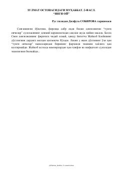

ZOBella Svon va vampirlar dunyosi o'rtasidagi murakkab sevgi qissasining davomi.
Ushbu asar mashhur 'Twilight' (Saga) turkumining ikkinchi qismi bo'lib, unda bosh qahramon Bella Svonning o'z sevgilisi Edvard Kallen bilan bo'lgan murakkab munosabatlari tasvirlanadi. Voqealar rivojida Bella o'zining o'n sakkiz yoshga to'lishi va vampirlar dunyosi bilan bog'liq xavfli sirlar bilan to'qnash kelishi hikoya qilinadi.